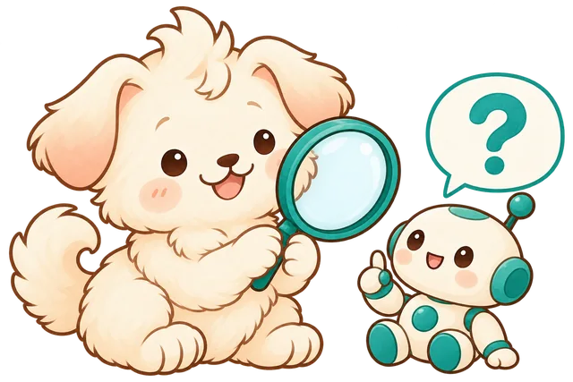
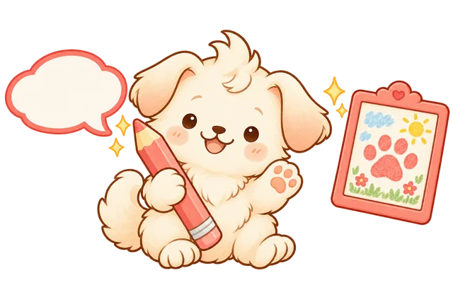
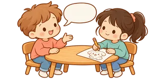
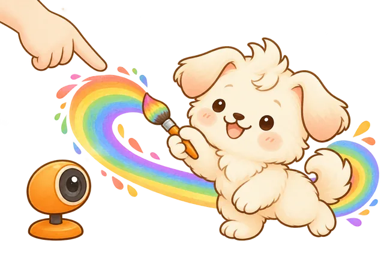
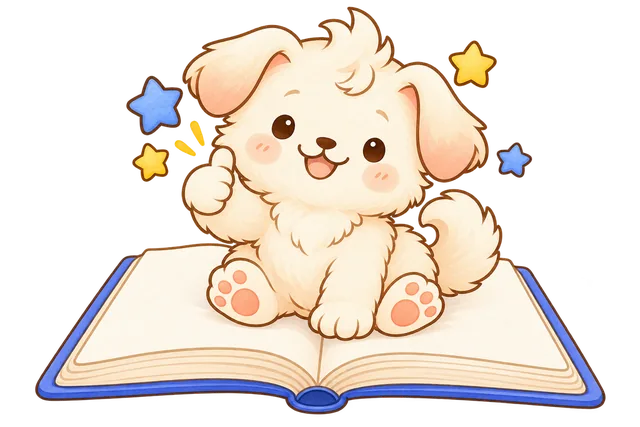

반려동물 척척박사가 되었어요
인공지능은 그럴듯하지만 틀린 말을 할 때가 있어요. 이것을 ‘할루시네이션’이라고 해요. 내 생각을 먼저 정하고, 믿을 수 있는 곳에서 직접 찾아 확인해 봐요.

1-1반려동물 상식 몸풀기
먼저 가볍게 맞혀 봐요. 정답을 고르면 바로 알려 줘요.
1-2AI의 말, 팩트체크하기
AI가 반려동물에 대해 말한 6개의 주장 중에는 가짜가 섞여 있어요. 한 문제씩 예상하기 → 검색하기 → 근거 쓰기 → 판정하기 순서로 풀어요.
오늘 목표 3개 이상 확인하기 · 시간이 남으면 더 도전!
0 / 6
0
0
1-3믿을 수 있는 정보인지 묻는 세 가지 질문
백과사전, 신문사, 정부·공공기관, 동물병원처럼 책임지고 쓴 곳인지 확인해요.
두 곳 이상에서 같은 내용을 찾으면 더 믿을 수 있어요. 이것을 교차 검증이라고 해요.
AI의 말이 맞는지 확인하는 중이니, 확인도 AI가 아닌 곳에서 해야 해요.
프롬프트와 친해지고 체험해 봐요
버튼으로 만드는 생성기와 내가 직접 쓰는 프롬프트는 무엇이 다를까요? 한 단계씩 넘기며 짝꿍과 함께 체험해 봐요.

2-1버튼으로 만드는 반려동물
동물, 색깔, 액세서리를 하나씩 고르고 ‘만들기’를 눌러 보세요.
버튼은 정해진 것만 고를 수 있어요. 친구가 같은 버튼을 누르면 똑같은 그림이 나와요. 내 머릿속 그림을 그대로 표현하려면 직접 말로 설명해야 해요. 그 말이 바로 프롬프트예요.
‘반려동물 만들기’를 눌러요
2-2좋은 프롬프트의 세 가지 요소
프롬프트는 인공지능에게 주는 명령이에요. 어느 쪽이 내가 원하는 그림에 더 가까운 결과를 줄까요? 골라 보세요.
1. 구체적으로 말하기
무엇을 그릴지 크기, 색깔, 털, 자세를 자세히 말해요.
하얗고 복슬복슬한 털을 가진 동그란 아기 토끼
2. 조건 정하기
넣을 것과 뺄 것, 배경, 개수를 정해요.
복잡한 무늬 없이, 흰색 배경 한가운데 한 마리만
3. 예시 들기
어떤 느낌이나 그림 방식인지 예를 들어 알려 줘요.
동화책 수채화 그림처럼, 점토 인형 느낌으로
2-3짝꿍과 함께하는 프롬프트 상상 드로잉 1번째 그리기

A다듬은 프롬프트
4단계에서 고칠 수 있어요.
B는 질문하지 않고 글만 보고 그려요. 그림 실력보다 프롬프트에 적힌 대로 그렸는지가 중요해요.
B프롬프트만 보고 그리기
B가 다 그리면 눌러 봐요. 구글 ‘Quick, Draw!’ 낙서 그림으로 배운 AI가 345가지 가운데에서 맞혀요.
2-4비교하고 프롬프트 다듬기
A의 머릿속 반려동물과 B의 그림을 비교해요. 그림이 다르게 나왔다면 그림이 아니라 프롬프트에 빠진 말을 찾아요.
시간이 남으면 A와 B의 역할을 바꿔서 한 번 더 해 봐요.
나만의 반려동물과 그림을 그려요
엔트리의 인공지능 ‘손 인식’ 블록을 쓰면 카메라 앞에서 손가락을 움직여 그림을 그릴 수 있어요. 내 반려동물이 손가락을 따라다니며 붓처럼 그림을 그리게 만들어 봐요.

3-1코딩 순서
- 엔트리 접속하기
크롬 브라우저에서 playentry.org에 로그인하고 만들기 → 작품 만들기를 눌러요.
- 배경 바꾸기
오브젝트 추가하기에서 반려동물이 살 배경을 골라요. 방, 공원, 바닷가 무엇이든 좋아요.
- 반려동물 오브젝트 넣기
엔트리봇을 지우고 내 반려동물을 골라요. 크기를 작게 줄이면 붓처럼 쓰기 좋아요.
- 손 인식 블록 불러오기
인공지능 → 인공지능 블록 불러오기 → 손 인식을 추가해요. 카메라 사용을 허락해 주세요.
- 블록 조립하기
오른쪽 설계도처럼 반려동물 오브젝트에 블록을 조립해요. 검지를 움직이면 반려동물이 따라오며 선이 그려져요.
- 저장하고 공유하기
작품 이름을 정해 저장하고, 친구들에게 내 반려동물 그림을 보여 줘요.
블록 설계도
반려동물 오브젝트에 넣는 블록이에요.
- 손 인식 시작하기: 카메라로 내 손을 찾기 시작해요.
- 만일 손을 인식했는가?: 손이 화면에 보일 때만 움직여요.
- 검지 끝의 x, y 좌표: 반려동물이 내 검지 끝을 따라가며 선을 그려요.
- 0.01초 기다리기: 움직임이 부드러워지고 컴퓨터가 덜 힘들어요.
손 인식은 크롬이나 웨일에서 잘 돼요. 손이 화면에 다 보이도록 카메라에서 조금 떨어져 앉아요.
미리엔트리 전에 진짜 손 인식으로 그려 보기
엔트리의 손 인식 블록과 같은 AI예요. 카메라가 손가락 마디 21곳을 찾고, 그중 검지 끝의 x, y 좌표를 강아지가 따라가며 선을 그려요. 영상은 이 컴퓨터 밖으로 나가지 않아요.
검지만 펴면 그려지고, 주먹을 쥐면 멈춰요.
화면 왼쪽 위 숫자가 검지 끝의 좌표예요. 엔트리 무대처럼 가운데가 x 0, y 0이고, 오른쪽 끝이 x 240, 위쪽 끝이 y 135예요.
3-2코딩 점검표
오늘 배운 내용 정리하기
오늘 배운 것을 한 문장으로 정리해 발표하고, 작품을 만든 느낌을 나눠요.

오늘의 나
발표한 문장으로 말해요
AI가 알려 준 정보는 해야 한다. 왜냐하면 때문이다.
프롬프트는 써야 한다. 왜냐하면 때문이다.
소감작품을 완성한 느낌
엔트리의 이미지 분류 인공지능을 활용해 반려동물을 돌보는 양육 게임을 만들어요.